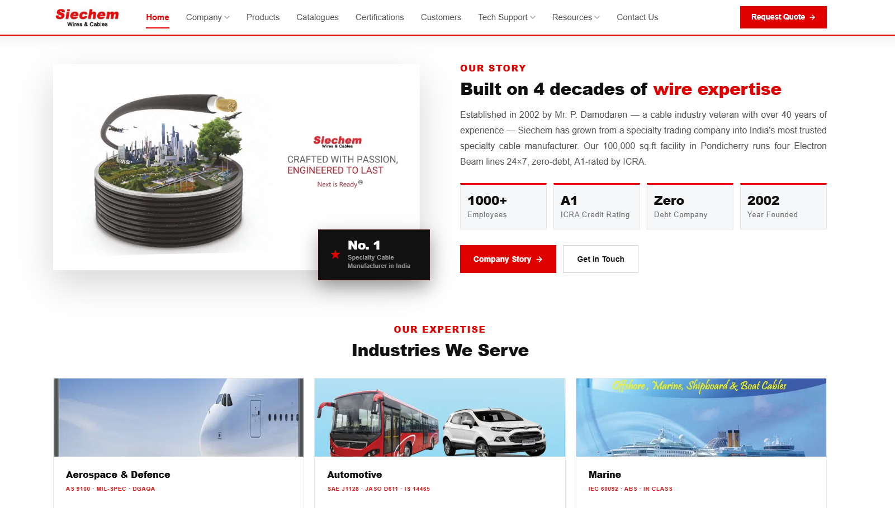

Siechem Technologies Corporate Digital Ecosystem
Designed, developed, and deployed 3 responsive corporate web properties for Siechem Technologies, an international manufacturer of specialized wires and cables for aerospace, defense, and renewable energy.
Deployed 3 company websites with zero downtime and unified branding.
Built responsive product catalog spec sheets for defense & aerospace cables.
Streamlined quotation funnel and cross-team marketing visual consistency.
WordPress
WPBakery
HTML5 / CSS3
JavaScript
Figma
Photoshop